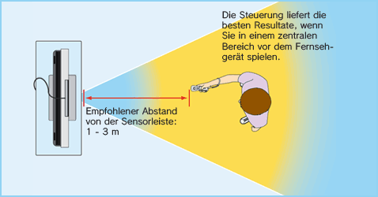

2 |
Zum sicheren Gebrauch |
 |
❶ Tragen Sie die Handgelenksschlaufe! Vergewissern Sie sich, dass bei jedem Spieler sowohl die Handgelenksschlaufe (RVL-018 oder RVL-018A) als auch der Stopper fest und sicher angelegt sind. Wenn mehrere Spieler abwechselnd mit derselben Wii-Fernbedienung spielen, muss jeder Spieler die Handgelenksschlaufe beim Spielen korrekt verwenden. Die Verwendung der Handgelenksschlaufe verhindert unbeabsichtigtes Werfen oder Fallenlassen der Wii-Fernbedienung, falls diese während des Spielens aus Versehen losgelassen wird.   ❷ Halten Sie die Wii-Fernbedienung fest in der Hand und lassen Sie sie nicht los! Lassen Sie während des Spielens die Wii-Fernbedienung nicht los, selbst wenn Sie die Handgelenksschlaufe verwenden, und bewegen Sie sich beim Spielen nicht mehr als nötig. Spielen Sie zum Beispiel Bowling in Wii Sports, dann müssen Sie zum Loslassen der Kugel im Spiel auf den B-Knopf auf der Wii-Fernbedienung drücken – LASSEN SIE AUF KEINEN FALL DIE Wii-FERNBEDIENUNG SELBST LOS. Sollten Sie beim Spielen feuchte Hände bekommen, unterbrechen Sie das Spielen unbedingt und trocknen Sie Ihre Hände ab. Übermäßige Bewegungen und ein Loslassen der Wii-Fernbedienung könnte die Handgelenksschlaufe beschädigen. Sollte Ihnen die Wii-Fernbedienung entgleiten, könnte dies zu Verletzungen von in der Nähe stehenden Personen oder zu Schäden an nahegelegenen Objekten führen. Weitere Informationen zum Gebrauch der Handgelenksschlaufe Der Spielablauf mit der Wii-Fernbedienung kann schnelle und dynamische Bewegungsabläufe mit sich bringen. Bitte verwenden Sie stets die Handgelenksschlaufe, um das Risiko zu verringern, dass Ihnen die Wii-Fernbedienung beim Spielen aus der Hand gleitet und dadurch Schäden an der Umgebung sowie der Wii-Fernbedienung entstehen oder andere Personen verletzt werden.
Sorgen Sie für ausreichend Platz zum Spielen! Während des Spielens mit der Wii-Fernbedienung werden Sie möglicherweise Platz zum Bewegen benötigen. Stellen Sie sicher, dass sich in Ihrem Bewegungsumfeld weder andere Personen noch Gegenstände oder Möbel befinden, um ein Aneinanderstoßen zu vermeiden. Beachten Sie bitte auch den empfohlenen Mindestabstand von einem Meter zum Fernseher. 
Diese Informationen können Sie auch unter |

 |
 |
 |